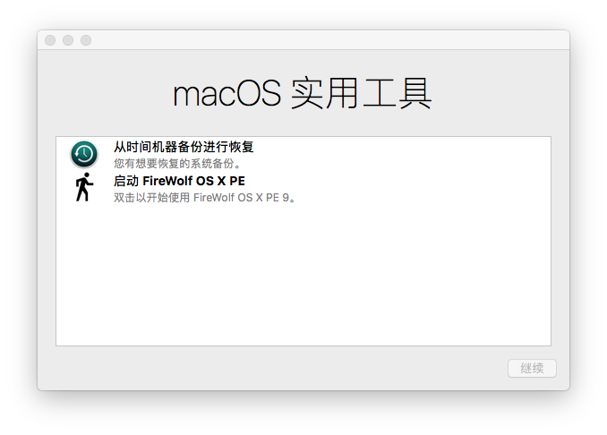
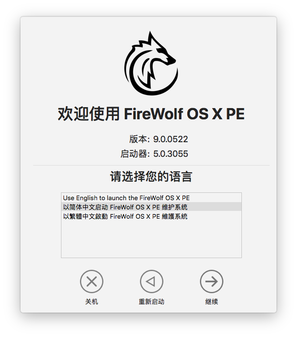
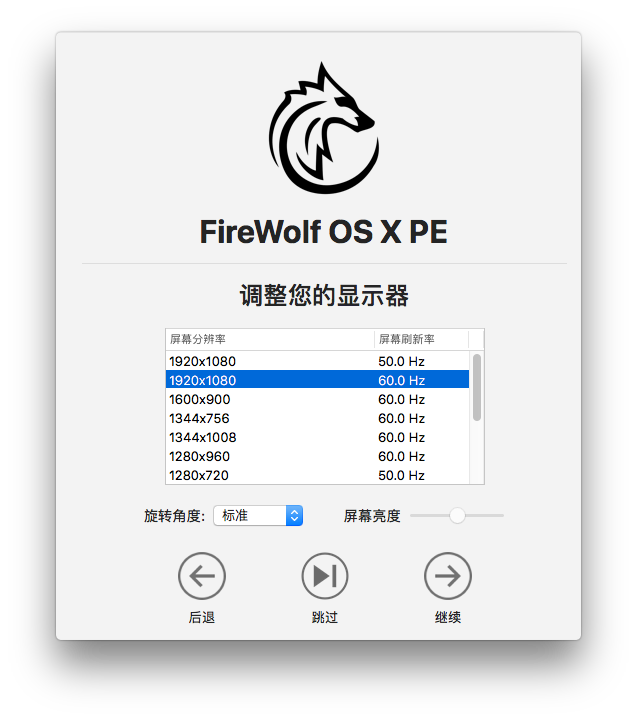
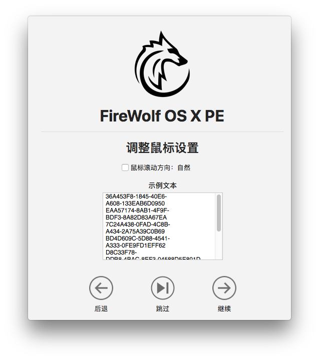
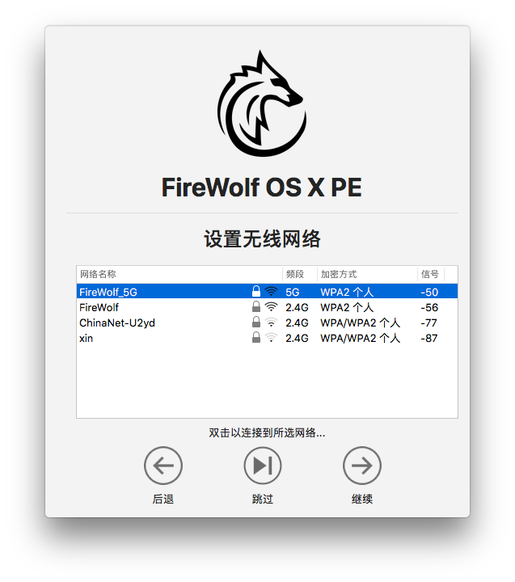
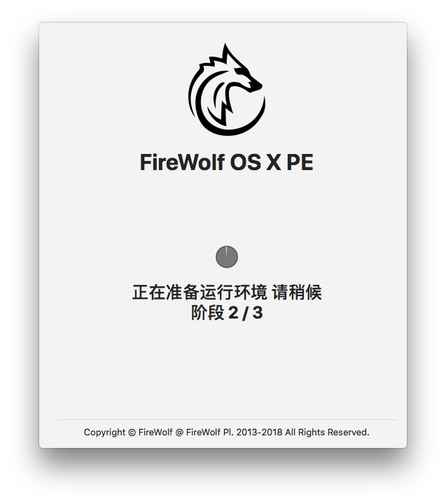

第三章 开始使用
待进度条走完，选择语言后，你会看到熟悉的 macOS 实用工具的主界面。

如果你需要从现有的时光机备份恢复数据的话，请选择『从时光机恢复』并按照提示操作。
如果你需要使用磁盘武士工具修复磁盘的话，请选择『启动磁盘武士』并按照提示操作。
双击 『启动 FireWolf OS X PE』 （以下简称『预启动器』）来进入 FireWolf OS X PE。
预启动器启动后，请选择 PE 运行的语言。目前 PE 仅支持英语，简体中文以及繁体中文。

单击『继续』后进入显示器设置界面。你可以在此调整屏幕分辨率、亮度以及旋转角度。
列表里显示的都是系统默认支持的分辨率，此功能主要面向 4K/5K 显示器用户以避免字体过小问题。
一般用户可直接『跳过』此项设置。

请注意，预启动器暂时不支持设置 HiDPI 分辨率，该功能可能会在后续更新中支持，你也可以在之后使用 RDM 工具设置 HiDPI。
单击『继续』后进入鼠标设置界面。你可以在此调整鼠标滚动方向。

单击『继续』后进入无线网络设置界面。如果你的电脑上没有无线网卡，此界面将会被跳过。

双击列表中的无线网络后输入密钥来联网。如果你不需要无线网络的话，请直接『跳过』。
默认每 10 秒钟刷新列表，如需手动刷新，请右键单击列表选择『刷新无线网络』。
如需开关无线网卡，请右键单击列表选择『开启/关闭无线网卡』。
单击『继续』后，预启动器会为你准备 PE 运行环境。请耐心等待。

准备完成后，PE 的主启动器 FireWolf MultiApp Launcher 将会启动。
至此，你已经正式进入 FireWolf OS X PE 了。